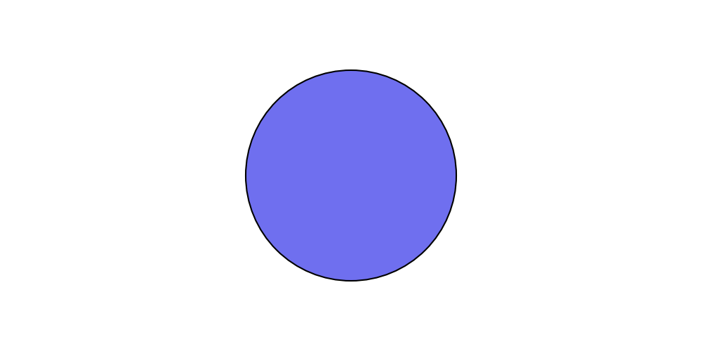
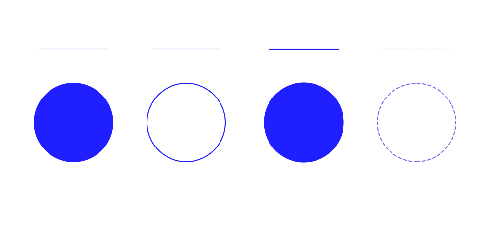
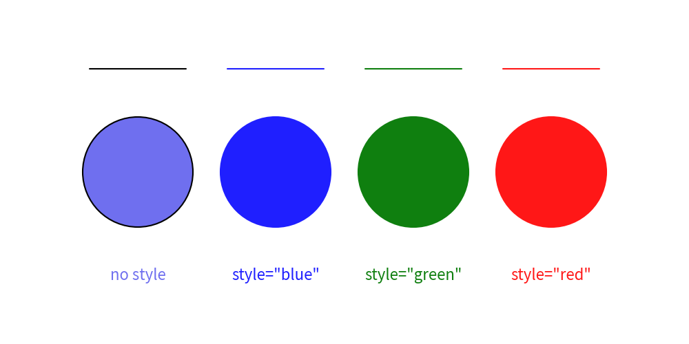

==================
Preset Styles
Drawlib provides a preset styles feature under drawlib.preset_styles.
The default preset styles are applied automatically at the start of drawing.
A preset style is a collection of predefined Style objects for drawing items (icons, images, lines, shapes, text).
If you don't specify a style for drawing items, the default preset style will be applied.
Alternatively, you can specify a style with a shortcut name, such as text((10, 10), "Hello", style="blue").
Understanding drawlib's preset styles will save you from defining many individual style objects. Additionally, your illustrations will achieve visual consistency in styles.
Here are the key concepts of drawlib's preset styles system:
- Preset styles are accessed via
drawlib.preset_styles. - Official presets are available (
"default","essentials","monochrome"). - You can retrieve style objects using
get_style(name). - Preset style names can be passed directly as strings to
styleparameters. - Custom presets can be defined using
PresetStyles.
Official Style Presets
Drawlib includes three official style presets:
"default": Clean, beginner-friendly color palette with light blue highlights."essentials": Modern, rich palette with vibrant colors."monochrome": Sleek grayscale palette for documentation and technical diagrams.
You can inspect all available styles in a preset using get_styles() or preset-specific functions like get_default_styles().
Applying Preset Styles
Here is a circle drawn with default styles (no style specified):
from drawlib.canvas import config, save
from drawlib.shapes import circle
config(width=100, height=50)
circle((50, 25), radius=15)
save()

Executing this code yields the following image:
from drawlib.canvas import config, save
from drawlib.shapes import circle
config(width=100, height=50)
circle((50, 25), radius=15)
save()

Default preset style
If you don't provide any style, the default preset style is applied.
Pre-defined Style Names
You can apply a preset style to drawing items using its name string.
Drawing functions accept the style argument, which takes Style objects as well as string style names.
The default preset includes the following primary color style names:
""(blank): Default style applied when no style name is provided."red": Red accent color"green": Green accent color"blue": Blue accent color"black": Black color"white": White color
Let's see them in action.
from drawlib.canvas import config, save
from drawlib.lines import line
from drawlib.shapes import circle
from drawlib.text import text
config(width=100, height=50)
line_y = 40
text_y = 10
# default style
line((13, line_y), (27, line_y))
circle((20, 25), radius=8)
text((20, text_y), text="no style")
# blue style
line((33, line_y), (47, line_y), style="blue")
circle((40, 25), radius=8, style="blue")
text((40, text_y), text='style="blue"', style="blue")
# green style
line((53, line_y), (67, line_y), style="green")
circle((60, 25), radius=8, style="green")
text((60, text_y), text='style="green"', style="green")
# red style
line((73, line_y), (87, line_y), style="red")
circle((80, 25), radius=8, style="red")
text((80, text_y), text='style="red"', style="red")
save()

Executing this code produces the following image:
from drawlib.canvas import config, save
from drawlib.lines import line
from drawlib.shapes import circle
from drawlib.text import text
config(width=100, height=50)
line_y = 40
text_y = 10
# default style
line((13, line_y), (27, line_y))
circle((20, 25), radius=8)
text((20, text_y), text="no style")
# blue style
line((33, line_y), (47, line_y), style="blue")
circle((40, 25), radius=8, style="blue")
text((40, text_y), text='style="blue"', style="blue")
# green style
line((53, line_y), (67, line_y), style="green")
circle((60, 25), radius=8, style="green")
text((60, text_y), text='style="green"', style="green")
# red style
line((73, line_y), (87, line_y), style="red")
circle((80, 25), radius=8, style="red")
text((80, text_y), text='style="red"', style="red")
save()

Specifying preset style by name
Style Naming Rules
Preset style names follow this syntax: <color>_<type>_<weight>.
If the color, type, or weight are default, they can be omitted in the style name.
- Types:
flat: Solid color with no border outline.solid: Outline with no fill color.dashed: Dashed outline with no fill color.
- Weights:
light: Thinner border width or lighter font weight.bold: Thicker border width or bolder font weight.
Example:
from drawlib.canvas import config, save
from drawlib.lines import line
from drawlib.shapes import circle
from drawlib.text import text
config(width=100, height=50)
line_y = 40
text_y = 10
line((8, line_y), (22, line_y), style="blue")
circle((15, 25), radius=8, style="blue")
line((31, line_y), (45, line_y), style="blue_solid")
circle((38, 25), radius=8, style="blue_solid")
line((55, line_y), (69, line_y), style="blue_bold")
circle((62, 25), radius=8, style="blue_bold")
line((78, line_y), (92, line_y), style="dashed")
circle((85, 25), radius=8, style="dashed")
save()

Executing this code results in the following image:
from drawlib.canvas import config, save
from drawlib.lines import line
from drawlib.shapes import circle
from drawlib.text import text
config(width=100, height=50)
line_y = 40
text_y = 10
line((8, line_y), (22, line_y), style="blue")
circle((15, 25), radius=8, style="blue")
line((31, line_y), (45, line_y), style="blue_solid")
circle((38, 25), radius=8, style="blue_solid")
line((55, line_y), (69, line_y), style="blue_bold")
circle((62, 25), radius=8, style="blue_bold")
line((78, line_y), (92, line_y), style="dashed")
circle((85, 25), radius=8, style="dashed")
save()
Style type and weight variations
For detailed information on each preset style catalog, please refer to the Preset Styles section.
© 2026 drawlib by Yuichi Ito. Released under the Apache 2.0 License.